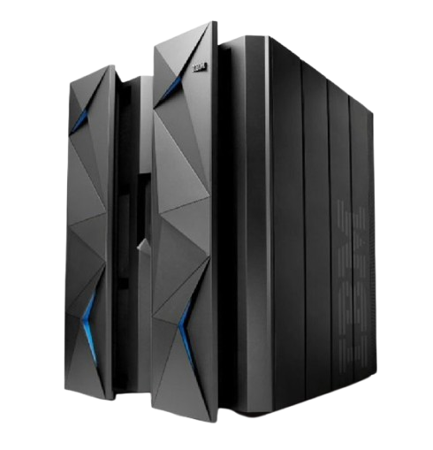
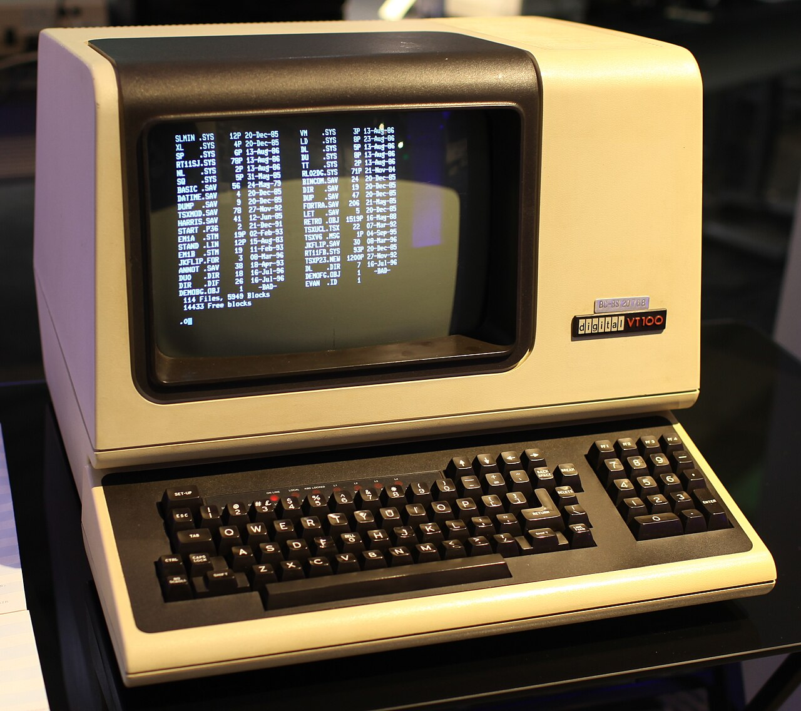
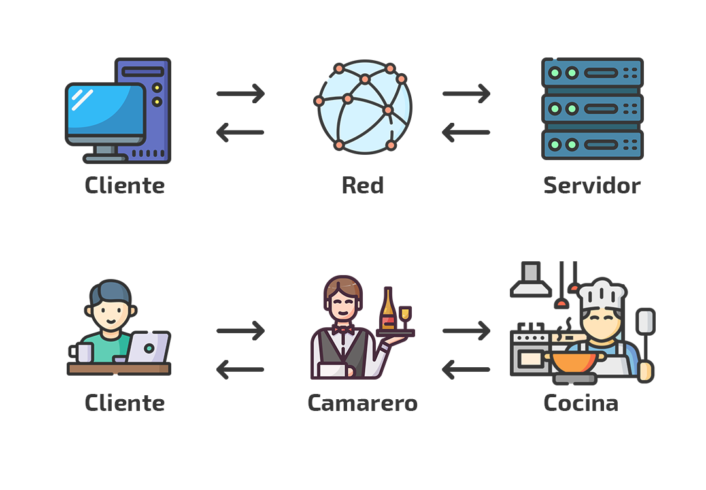

Evolución de Sistemas Computacionales
Explora cómo ha cambiado la arquitectura del software a lo largo del tiempo, expandiendo cada sección o revisando el resumen de la línea de tiempo.

El gigante del procesamiento
Un Mainframe es un computador de gran capacidad diseñado para procesar enormes cantidades de datos y ejecutar múltiples operaciones de manera simultánea, segura y confiable.
Son utilizados principalmente por bancos, entidades gubernamentales, compañías de seguros y aerolíneas que requieren alta disponibilidad continua.

Solo pantalla y teclado
Una Terminal Bruta (Dumb Terminal) es un dispositivo sin capacidad de procesamiento ni almacenamiento propio. Su única función es conectar al usuario con el Mainframe central.
La terminal bruta transmite las pulsaciones del teclado y muestra los resultados que el servidor procesa y envía de regreso por la red.

La base de Internet
En este modelo, un cliente (que ahora sí tiene inteligencia, como un navegador web o un teléfono inteligente) solicita recursos, y un servidor los procesa y entrega.
- ✅ Cliente: Pide información (Ej: Tu celular abriendo Instagram).
- ✅ Servidor: Valida y entrega la información (Ej: Los servidores de Meta).
- ✅ Red: El medio por donde viajan los datos (Internet).
Separación de responsabilidades
El modelo moderno (N-Tier) divide las tareas en tres grandes capas para que el software sea más seguro y fácil de actualizar.
1. Capa de Presentación
La interfaz gráfica con la que interactúa el usuario (HTML, CSS, Frontend).
2. Capa de Negocio
El cerebro de la aplicación. Contiene la lógica, reglas y cálculos (Backend, APIs).
3. Capa de Datos
Donde se almacena la información de forma persistente (Bases de datos SQL/NoSQL).
Línea de Tiempo: Resumen Histórico
De la centralización absoluta a la distribución por capas modernas.
Mainframe
Grandes servidores centralizados que procesaban lotes masivos de datos para grandes empresas.
Terminal Bruta
Pantallas sin procesamiento propio; dependían enteramente de la conexión al servidor central.
Cliente-Servidor
Reparto de tareas donde dispositivos inteligentes solicitan recursos a servidores dedicados.
Multinivel (N-Tier)
Estructura modular dividida en capas independientes: Presentación, Negocio y Datos.